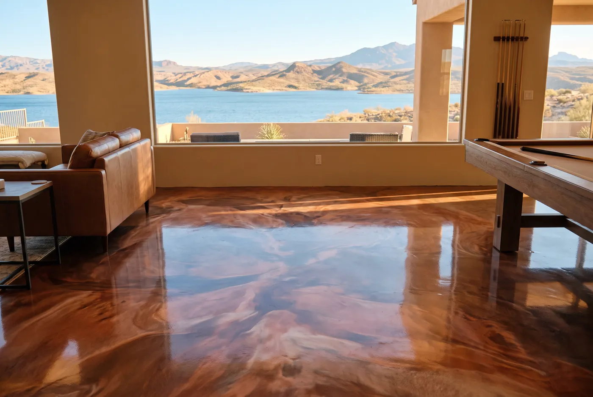

Metallic epoxy flooring in Lake Havasu City for homeowners and businesses who want a floor people stop and look at. Copper and pearl pigments (or silver, or a deep blue) are worked into the resin by hand, so no two floors match.
(928) 490-8929 Call Now for a Free Estimate
The slab is ground and repaired like any coating job, then sealed with a primer and a tinted base coat. The metallic layer is poured and spread, then worked with rollers and brushes. Some passes even use a leaf blower to push the pigment around. A clear topcoat protects it. Expect two to three days, since each layer needs time to cure.
A metallic floor is a smooth, high-gloss surface, so fine scratches show more than they would on a busy flake floor. Furniture pads, a doormat at each entry and a good topcoat cut it way down. That’s also why we steer people away from metallic in a working garage.
Metallic floors take more material and more hand work than flake systems. The size of the room, the number of colors, slab repair and the topcoat you choose set the price. Call (928) 490-8929 and we’ll price it after seeing the room and talking through colors.
Flake is the workhorse: textured, forgiving and great at hiding dirt. Metallic is the showpiece: glossy, smooth and striking, but more likely to show dust and scratches. Garages and shops usually get flake; living spaces and showrooms are where metallic shines.
It can, and some people love it there, but it shows tire marks, dust and scratches more than a flake floor. If the garage is more showroom than workshop, metallic works. If you store a boat or work on cars, flake is the better pick.
The colors and general style will, but every metallic floor moves differently as it is worked, so yours will be one of a kind. We show color samples and photos of the finish at the estimate so you know what to expect.
Sweep or dust-mop often to keep grit from scratching the surface, and damp-mop with a pH-neutral cleaner. Skip vinegar and harsh chemicals, which can dull the topcoat over time.
Book a free visit and see color samples in your own space.
Call (928) 490-8929 for a Free Estimate